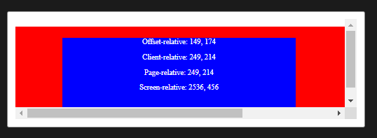

A continuación se mostraran los elementos
más populares dentro del lenguaje de estilo CSS
especificamente la versión CSS3.
Ejemplos:
Let's take a look at an example. This simple example creates a set
of nested boxes. Whenever the mouse enters, moves around inside, or
exits the inner box, the corresponding event is handled by updating
a set of informational messages within the box, listing out the
current mouse coordinates in each of the four available coordinate
systems.
JavaScript
Let's look at the script in two sections. First, the code that logs
the coordinates to the screen. This code will be called by the event
handler for the various mouse events we watch.
Displaying the coordinates
As we'll see in the HTML, the inner box (the one we're watching for
events on) contains several paragraphs; one for each of the four
coordinate systems we'll be reporting on.
let inner = document.querySelector(".inner");
let log = document.querySelector(".log");
function setCoords(e, type) {
let idX = type + "X";
let idY = type + "Y";
document.getElementById(idX).innerText = e[idX];
document.getElementById(idY).innerText = e[idY];
}
A reference to the div inside the inner box which contains the
paragraphs that will show the coordinate information is fetched into
log.
The setCoords() function is designed to accept as input a MouseEvent
and the name of the origin to use when obtaining the coordinates.
The implementation is then quite simple. The variables idX and idY
are set to strings with the names of the properties corresponding to
the coordinates in the given coordinate system. For example, if the
value of type is "page", then idX is "pageX" and idY is "pageY".
Handling the mouse events
setCoords() is called by the event handler for the various mouse
events, named update(); this is shown below.
function update(e) {
setCoords(e, "offset");
setCoords(e, "client");
setCoords(e, "page");
setCoords(e, "screen");
}
inner.addEventListener("mouseenter", update, false);
inner.addEventListener("mousemove", update, false);
inner.addEventListener("mouseleave", update, false);
The event handler is in the update() method. It calls setCoords()
once for each coordinate system, passing in the event that occurred.
Our main code sets up the event handlers on the inner box by calling
addEventListener() for each of the types mouseenter, mousemove, and
mouseleave.
HTML
The HTML for our example is below. Note that within the div with the
ID "log", we have a paragraph for each coordinate system, with span
used for each of the elements to receive and display the coordinates
in each model.
<div class="outer">
<div class="inner">
<div class="log">
<p>
Offset-relative: <span id="offsetX">0</span>,
<span id="offsetY">0</span>
</p>
<p>
Client-relative: <span id="clientX">0</span>,
<span id="clientY">0</span>
</p>
<p>
Page-relative: <span id="pageX">0</span>,
<span id="pageY">0</span>
</p>
<p>
Screen-relative: <span id="screenX">0</span>,
<span id="screenY">0</span>
</p>
</div>
</div>
</div>
The CSS is pretty much just for appearances here. The class "outer"
is used for the containing box, which is intentionally too wide to
show in the MDN window, to allow you to scroll it horizontally. The
"inner" box is the one that we track events in and in which we show
the mouse coordinates.
.outer {
width: 1000px;
height: 200px;
background-color: red;
}
.inner {
position: relative;
width: 500px;
height: 150px;
top: 25px;
left: 100px;
background-color: blue;
color: white;
cursor: crosshair;
user-select: none;
-moz-user-select: none;
-ms-user-select: none;
-webkit-user-select: none;
}
.log {
position: relative;
width: 100%;
text-align: center;
}
Result
Here you can see the results in action. As you mouse in and around
the blue box, watch the values of the mouse's X and Y coordinates
change in the various coordinate systems in which you can obtain the
values. Note also the effect of scrolling the example horizontally
upon the values returned and how the value of clientX doesn't
change.
